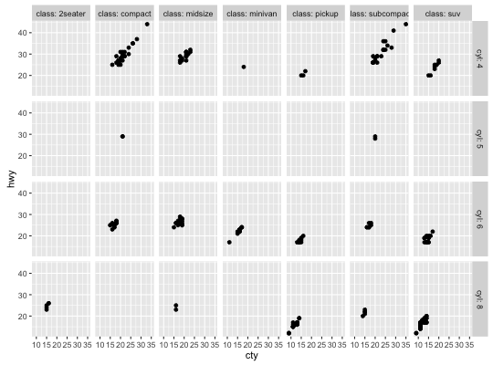
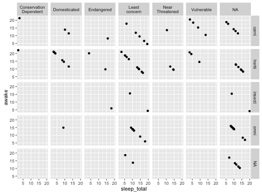

Generic labeller function for facets
Usage
labeller(..., keep.as.numeric = NULL, .as_character = FALSE, .multi_line = TRUE, .default = label_value)
Arguments
- ...
- Named arguments of the form
variable = labeller, wherevaluescould be a vector or method. - keep.as.numeric
- Deprecated, use
.as_characterinstead. - .as_character
- Logical, default FALSE. When TRUE, converts numeric labels to characters.
- .multi_line
- Whether to display the labels of multiple factors on separate lines. This is passed to the labeller function.
- .default
- Default labeller function with which to process the
labels not mentioned in
...or those produced with a lookup table or a non-labeller function.
Value
-
A labeller function to supply to
facet_grid
for the argument labeller.
Description
This function makes it easy to assign different labellers to different factors. The labeller can be a function or it can be a named character vectors that will serve as a lookup table.
Details
In case of functions, if the labeller has class labeller, it
is directly applied on the data frame of labels. Otherwise, it is
applied to the columns of the data frame of labels. The data frame
is then processed with the function specified in the
.default argument. This is intended to be used with
functions taking a character vector such as
capitalize.
Examples
p1 <- ggplot(mpg, aes(cty, hwy)) + geom_point() p1 + facet_grid(cyl ~ class, labeller = label_both)
p1 + facet_grid(cyl ~ class, labeller = labeller(cyl = label_both))ggplot(mtcars, aes(x = mpg, y = wt)) + geom_point() + facet_grid(vs + am ~ gear, margins=TRUE, labeller = labeller(vs = label_both, am = label_both))capitalize <- function(string) { substr(string, 1, 1) <- toupper(substr(string, 1, 1)) string } conservation_status <- c('cd' = 'Conservation Dependent', 'en' = 'Endangered', 'lc' = 'Least concern', 'nt' = 'Near Threatened', 'vu' = 'Vulnerable', 'domesticated' = 'Domesticated') ## Source: http://en.wikipedia.org/wiki/Wikipedia:Conservation_status p2 <- ggplot(msleep, aes(x = sleep_total, y = awake)) + geom_point() p2 + facet_grid(vore ~ conservation, labeller = labeller(vore = capitalize))p2 + facet_grid(vore ~ conservation, labeller = labeller( vore = capitalize, conservation = conservation_status ))
# We could of course have renamed the levels; # then we can apply another nifty function msleep$conservation2 <- plyr::revalue(msleep$conservation, conservation_status) p2 %+% msleep + facet_grid(vore ~ conservation2, labeller = labeller(vore = capitalize))
p2 %+% msleep + facet_grid(vore ~ conservation2, labeller = labeller(conservation2 = label_wrap_gen(10)) )
# When multiple factors index the facetting, simply refer to one of # them to assign a labeller: p3 <- ggplot(mtcars, aes(wt, mpg)) + geom_point() p3 + facet_grid(gear + am ~ vs + cyl, labeller = labeller( vs = label_bquote(.(cyl) ^ .(vs)), .default = label_value ))